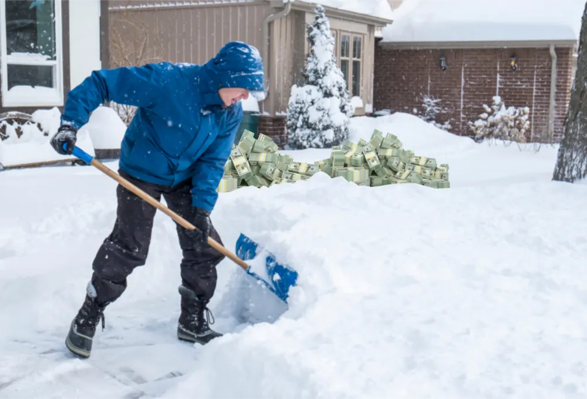

Inrikes

Pojke i Skogås blir Sveriges yngsta miljonär
Efter snökaoset under lovet har en ny affärsmöjlighet dykt upp: att skotta folks uppfarter. Nioåriga Linus Torstensson från Skogås nappade direkt. Hemligheten ligger i att följa marknaden.
"Det handlar bara om tillgång och efterfrågan", avslöjar Linus. "Trenderna på börsen visar tydligt att alla blir latare. Då kan man enkelt dyka in och håva stora vinster". Linus berättar också att det gäller att vara förberedd. "Att ett snökaos skulle uppstå visste jag redan för flera veckor sedan. Genom att köpa materiel i god tid är man först ut på marknaden och kan då snabbt exploatera gapet som uppstått". Efter att ha jobbat tio timmar om dagen, varje dag sedan 29:e december, har Linus räknat att han tjänat cirka 1,24 miljoner kronor. Med pengarna ska han investera i fler aktier inom försvarsindustrin och robux.
Linus vill tacka alla "hustlers" på TikTok och Instagram för allt han kan. "Utan dem hade jag inte varit där jag är idag. Det gäller att vara smart. Man måste kunna hitta trender och se in i framtiden lite grann. Dessutom hjälper det att jag inte betalar skatt genom att utnyttja loopholes i svensk lagstiftning". Linus berättar att hans stora idol är den fiktionella karaktären Patrick Bateman. "Han är en riktig sigma", avslutar Linus.